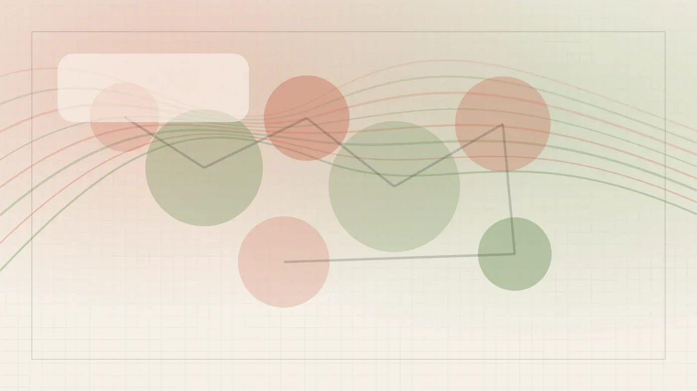
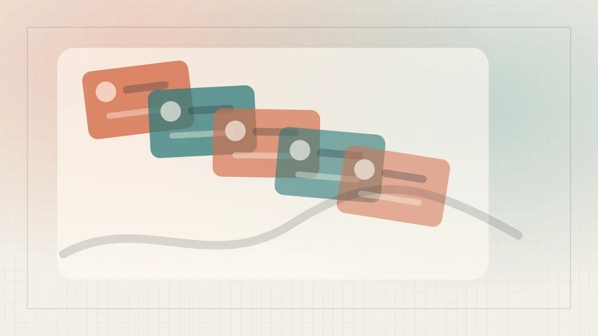
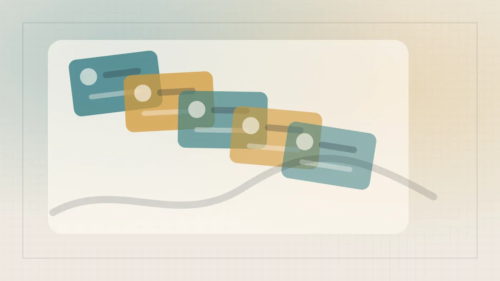
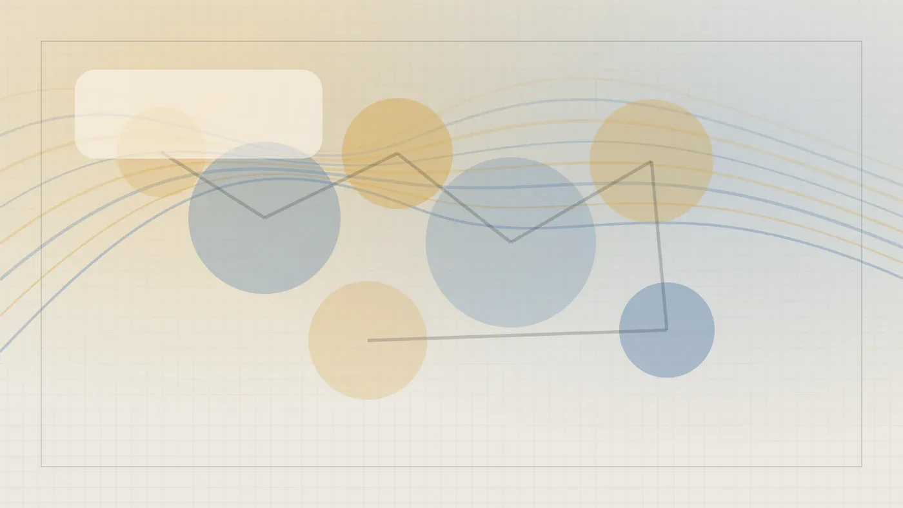

Код
Книга доцента Корнеллского университета: анализ данных с помощью LLM
Практическое руководство по интеграции LLM в анализ данных: от текста до аудио. Автор — преподаватель Корнеллского университета.
Habr AI
23 июн. 2026 г.Материалы из источника Habr AI.
191 материалов
Практическое руководство по интеграции LLM в анализ данных: от текста до аудио. Автор — преподаватель Корнеллского университета.

Домашний сервер, CouchDB и MCP: интеграция ИИ-агентов с заметками Obsidian без облака

Нейросеть на C++ прогнозирует ВВП и работает на Arduino за 300 рублей — без TensorFlow и PyTorch.

Инциденты с Replit и Operator показали, почему ИИ-инженерам нужны собственные evals — и как их строить.

Правительственная комиссия одобрила новую версию закона об ИИ. Разбираем, что изменилось для разработчиков.
Годовое исследование 500 сайтов: как промышленные компании попадают в ответы ChatGPT, Perplexity и Алисы

DeepSeek-R1 на ARM-сервере с A100: как обошли NUMA и собрали локальную LLM
Как на двух DGX Spark запустили DeepSeek-V4-Flash без очереди: ключевые настройки и 88% попаданий в кэш префиксов.

Как перестать бояться ИИ и начать использовать Claude Code с агентами, MCP и скиллами — разбор компонентов и ошибок.

Треть специалистов по ИБ уже используют ИИ: результаты опроса 170 профессионалов

Скорость vs безопасность: как вайб-кодерам не потерять данные и репутацию

OpenAI тестирует GPT-5.6 Pro: генерация 3D-миров, симуляторов и автоматизация браузера из одного промпта.

Как работает долговременная память ИИ: извлечение фактов, веса, забывание и проблемы с персональными данными

Автоматический подбор скиллов для Claude Code по контексту проекта

Автооценка вебинаров с LLM: пайплайн на Claude Code и whisper.cpp, правила работы с агентом и уроки для прода.

Фреймворк с модификатором Doubter заставляет LLM меньше врать — и не требует переобучения базовой модели

Сокращение найма джунов в ИТ на Западе: роль ИИ и токенмаксинг как новый тренд
Как ИИ меняет роли в продуктовой команде и почему доверие становится ключевым фактором

Как LLM правит код сайта без доступа к продакшену — архитектура MCP-сервера и разделение контента и кода.

cocoindex-code — семантический поиск по коду без Docker и API-ключей, ставится за две команды.

Разработчик добавил планирование и человеческий контроль в локального агента, решив проблемы с GigaChat.

Claude Opus 4.8 против GPT 5.5 и Gemini 3.1 Pro: 11 тестов на реальных задачах с оценкой стоимости.

Главред сократил время на статью в 5–8 раз, используя систему агентов в Claude Code

Как собрать локальный генератор картинок на Mac без программирования: опыт энтузиаста, грабли с macOS и FLUX.2 Klein

Один энтузиаст обучил 260M модель на домашней видеокарте — и она научилась считать.

Исследование Selectel: 25% российских компаний уже используют ИИ в облаке, а open-source модели становятся главным трендом.

NorthMiniCode — модель для локльной агентской разработки. Запускаем на двух видеокартах с llama.cpp и OpenCode.

Как подключить YandexGPT к ИИ-агентам: инструкция для OpenCode, Pi, Hermes и Claude Code
Google DeepMind описала четыре пути к сверхинтеллекту: от масштабирования до рекурсивного улучшения.
Anthropic отозвала Fable раньше срока — маркетинг или реальная угроза?